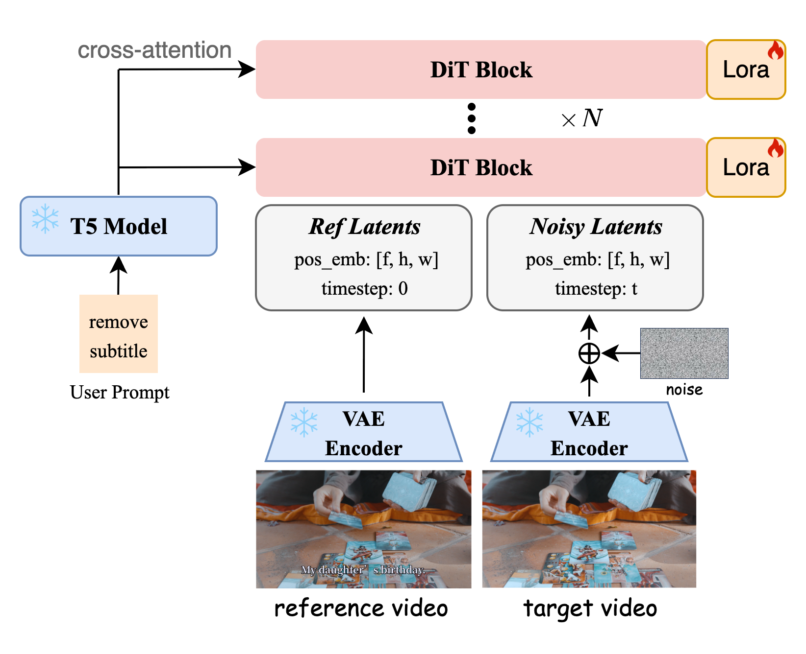
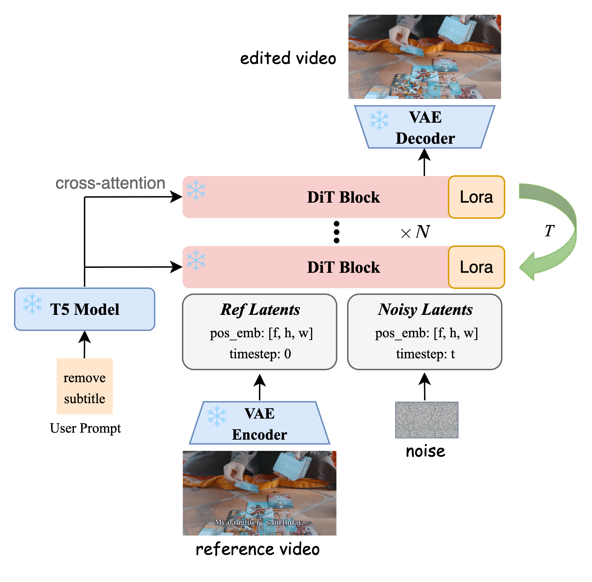
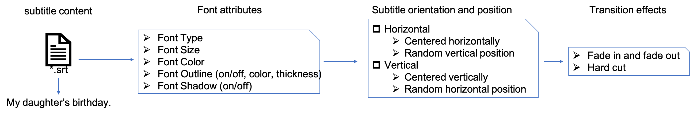
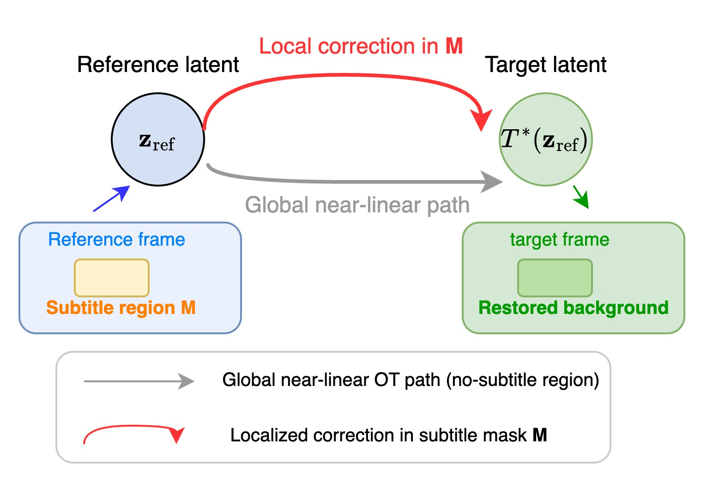

We demonstrate SEDiT's subtitle removal capability on a wide range of real-world videos, including single-shot long videos, multi-shot long videos, background-text discrimination, multilingual subtitle erasure, visual comparisons across different sampling steps, hard-case showcases, and Logo preservation. In addition, we present the video stylization capability achieved by training the same model architecture on a video stylization dataset.
Recent breakthroughs in video diffusion models have significantly accelerated the development of video editing techniques. However, existing methods often rely on inpainting video frames based on masked input, which requires extracting the target video mask in advance, and the precision of the segmentation directly affects the quality of the completion. In this paper, we present SEDiT, a novel one-stage video Subtitle Erasure approach via One-step Diffusion Transformer. We introduce a mask-free inference approach that enables direct erasure of the targeted subtitle. The proposed one-stage framework mitigates the sub-optimality inherent in the two-stage processing of prior models.
Since subtitle removal is a localized editing task in which most pixels remain unchanged, the underlying distribution shift is minimal, making it well-suited to one-step generation under rectified flow. We empirically validate the reliability of one-step denoising and further provide a formal theoretical justification. Under the localized-editing structure of subtitle removal, the conditional optimal transport (OT) map and its induced rectified flow velocity field are Lipschitz continuous with respect to the latent variable, which underpins the theoretical feasibility of one-step sampling.
To address the challenge of long-term temporal consistency, we adopt a hybrid training strategy by occasionally conditioning the model with a clean first-frame latent. This facilitates temporal continuity, allowing each segment during inference to leverage the output of its predecessor. To avoid visible seams caused by cropping and reinserting processed targets, particularly in scenarios involving substantial motion, we feed the original video directly into SEDiT. Thanks to one-step and chunk-wise streaming inference, our method can efficiently handle native 1440p video with infinite length.

(a) Training

(b) Inference

The empirical success of one-step inference in SEDiT is grounded in a theoretical analysis of the conditional rectified flow (CRF) framework applied to the subtitle erasure task.
Localized distributional shift. The reference video $z_\text{ref}$ and the target subtitle-free video differ only within the subtitle mask region $\mathcal{M}$. The conditional OT map decomposes as:
$$T^*(z \mid z_\text{ref}) = \bigl(T^*_{\mathcal{M}}(z_{\mathcal{M}},\, z_{\neg\mathcal{M}} \mid z_\text{ref}),\ z_{\neg\mathcal{M}}\bigr)$$
where the non-subtitle region $z_{\neg\mathcal{M}}$ is preserved exactly by the OT map.

Lipschitz continuity. Under a mild local Lipschitz assumption on $T^*_{\mathcal{M}}$, the conditional OT map satisfies:
$$\bigl\|T^*(z^{(1)} \mid z_\text{ref}) - T^*(z^{(2)} \mid z_\text{ref})\bigr\| \leq \sqrt{L_{\mathcal{M}}^2 + 1}\;\bigl\|z^{(1)} - z^{(2)}\bigr\|$$
Since $\mathcal{M}$ occupies only a small spatio-temporal region, $L_{\mathcal{M}}$ remains moderate, and the CRF path is globally near-linear with only localized curvature within $\mathcal{M}$.
Implication for one-step inference. The near-linearity means a single Euler step:
$$z = z_\text{noisy} + v_\theta(z_\text{noisy},\, t \mid z_\text{ref}) \cdot \Delta t$$
suffices to accurately approximate the full flow from the noisy latent to the subtitle-free latent. This provides a theoretical guarantee that one-step denoising is a principled consequence of the localized and smooth structure inherent in the subtitle removal task.
We propose SEDiT, a lightweight, one-stage, mask-free video editing framework for high-field video subtitle erasure. Unlike previous mask-based video inpainting methods, our approach eliminates the need for explicit masks, thereby bypassing the video mask segmentation process entirely. Furthermore, our method preserves the architecture of the underlying generative model, enabling efficient fine-tuning via LoRA. This design choice also allows for seamless integration with higher-quality video generation backbones to further enhance performance.
To support subtitle removal in videos of arbitrary length, we adopt a chunk-wise processing strategy, dynamically adjusting the chunk size based on the input resolution. To mitigate temporal discontinuities across chunks, we probabilistically inject the initial frame as a conditioning signal. Benefiting from this strong conditional guidance, frame repetition across chunks achieves temporal consistency with minimal artifacts.
During inference, our method requires only one step to produce high-quality results. With the high compression ratio of the base VAE model, our approach can directly process 1080p-resolution videos, completing 65 frames in just 4 seconds—making it particularly suitable for large-scale deployment.
@misc{hui2026seditmaskfreevideosubtitle,
title={SEDiT: Mask-Free Video Subtitle Erasure via One-step Diffusion Transformer},
author={Zheng Hui and Yunlong Bai},
year={2026},
eprint={2605.14894},
archivePrefix={arXiv},
primaryClass={cs.CV},
url={https://arxiv.org/abs/2605.14894},
}